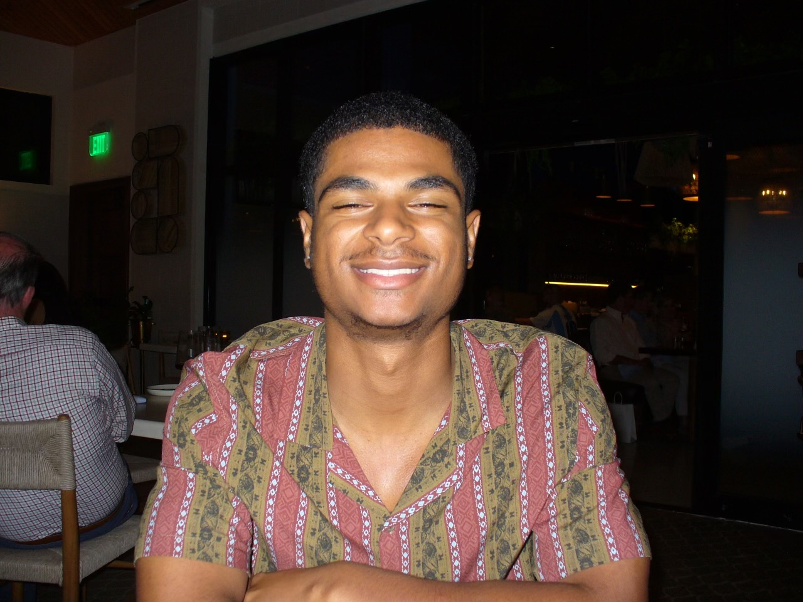
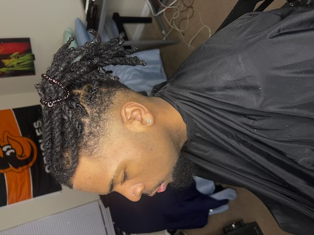

About Me
Welcome to my barbering webpage! I am Robert Burks, a self-taught barber aspiring to help provide affordable, quality haircuts. At 21 years old, I'm also attending North Carolina Agriculture and Technology State University as a Mechanical Engineering student. Originally from Baltimore, MD, I've spent my life in both Maryland and North Carolina. Growing up in these places has allowed me to meet so many amazing people. Therefore, something I'm passionate about is meeting new people, helping people, and teaching myself new things. If you're looking to get fly and gain a friend while doing it, you're in the right place.
Experience
I first began my journey into barbering as a way to earn a little bit of pocket money as being a college student can be financially stressing. While learning all the basics from mentors, courses, and practicing on friends and family, I realized how much I enjoy the craft. I love the feeling I get from helping people feel good and go out my door with confidence. Each haircut is an opportunity to refine my craft and I obtain more skills and confidence after each. So I'd greatly appreciate anyone who'd decide to take a seat in my chair. Becoming one of my clients means you will always be treated like family.
Location
I am located near the campus of North Carolina A&T University. I also have a residence in Fayetteville, NC. Therefore, I am open to taking any appointments from either of these places. Although, I do spend most of my time at my school since I am a full time student. If you are interested in having my services, you must be willing to commute to me to receive them as I do not do house calls. To get in contact with me, refer to my contact page.